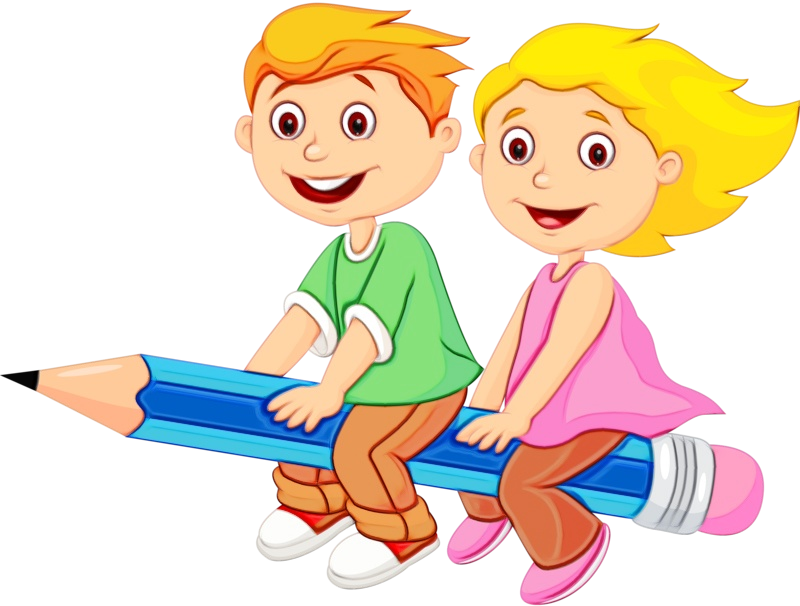

Hello, I'm
Nigin N Manayil
Software Developer
Hello, I'm
Software Developer
Get To Know More
Hey guys! I'm Nigin. I hail from Ernakulam, Kerala, India. I did my graduation from Toc H Institute of Science and Technology, Arakkunnam, Kerala, India. I've been doing code from school days, and I've had passion for that ever since. I have worked with various technologies including popular coding languages like C, Java, Python, Flutter etc., various databases like Firebase, NoSQL, MySQL, etc., and a gaming engine that is Unity 3D. After I worked in Unity 3D, I've had so much passion for game development. The main game project that I've worked on is called "Meta-Saurs - A Blockchain based Trading Game", which was done as a part of the final year project during the college days. The gameplay can be found by clicking here. My main aim is to become a game developer. To talk about my teamwork, I'm extremely good in working with my team members and excel with team leading qualities. I look forward to work with y'all. Thanks!
Sacred Heart CMI Public School
Thevara
Ernakulam
Kerala
India
Central Board Of Secondary Education
CGPA - 8.8

Gregorian Public School
Maradu
Ernakulam
Kerala
India
Central Board Of Secondary Education
CGPA - 8

Toc H Institute of Science and Technology
Arakkunnam
Ernakulam
Kerala
India
Central Board Of Secondary Education
CGPA - 8.91
Hey guys! I'm Nigin. I hail from Ernakulam, Kerala, India. I did my graduation from Toc H Institute of Science and Technology, Arakkunnam, Kerala, India. I've doing code from school days, and I've had passion for that ever since. I have worked with various technologies including popular coding languages like C, Java, Python, Flutter etc., various databases like Firebase, NoSQL, MySQL, etc., and a gaming engine that is Unity 3D. After I worked in Unity 3D, I've had so much passion for game development. The main game project that I've worked on is called "Meta-Saurs - A Blockchain based Trading Game", which was done as a part of the final year project during the college days. The gameplay can be found by clicking here. My main aim is to become a game developer. To talk about my teamwork, I'm extremely good in working with my team members and excel with team leading qualities. I look forward to work with y'all. Thanks!
Hey guys! I'm Nigin. I hail from Ernakulam, Kerala, India. I did my graduation from Toc H Institute of Science and Technology, Arakkunnam, Kerala, India. I've doing code from school days, and I've had passion for that ever since. I have worked with various technologies including popular coding languages like C, Java, Python, Flutter etc., various databases like Firebase, NoSQL, MySQL, etc., and a gaming engine that is Unity 3D. After I worked in Unity 3D, I've had so much passion for game development. The main game project that I've worked on is called "Meta-Saurs - A Blockchain based Trading Game", which was done as a part of the final year project during the college days. The gameplay can be found by clicking here. My main aim is to become a game developer. To talk about my teamwork, I'm extremely good in working with my team members and excel with team leading qualities. I look forward to work with y'all. Thanks!